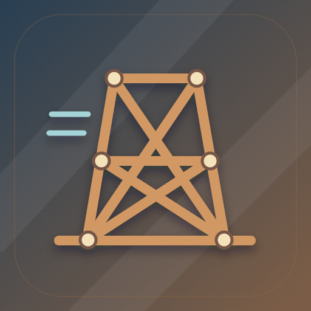

<- all projects

Torre de Vento
PC
Volume
Live
Make something worth standing behind.
A good idea needs to survive the wind. Reconnect the mountain wind stations by designing structures that balance weight, cost and movement, then run the wind test and watch them face gusts, vibration and moving loads. Pick from five materials and four joint types, read the force on every member, replay a failure and revise as often as you like. There are 36 briefs across six landscapes covering triangulation, cantilevers, suspension, arches, masts and turbine supports, plus daily contracts, an open workshop and a blueprint notebook that holds up to 24 saved designs.